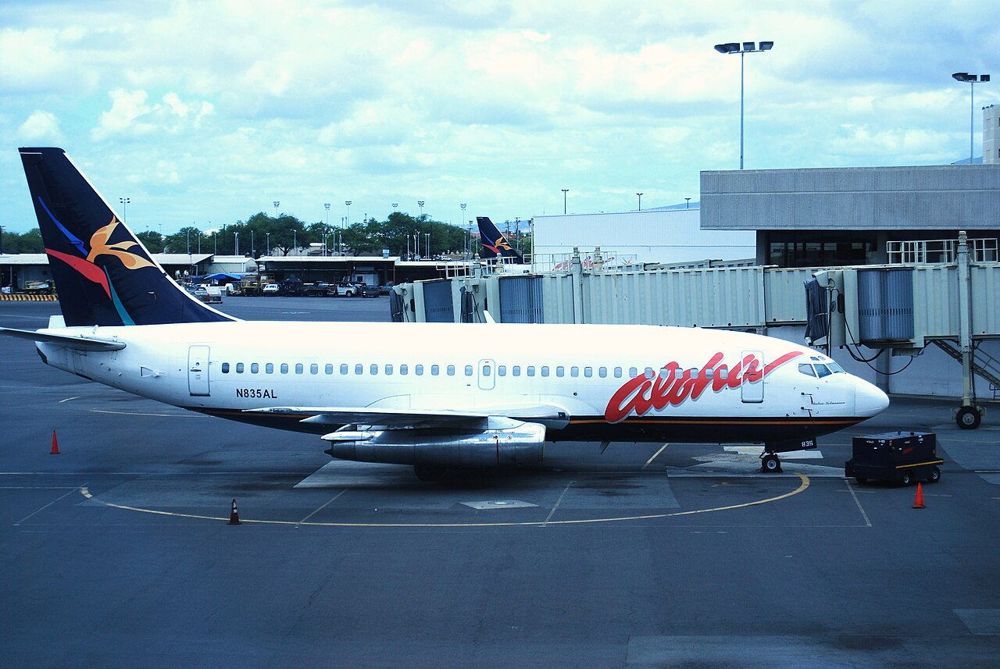
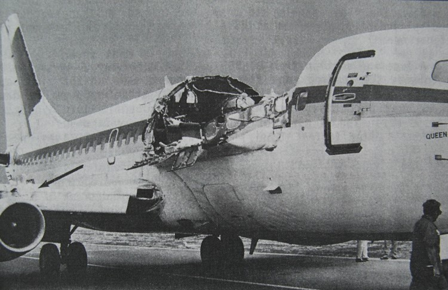
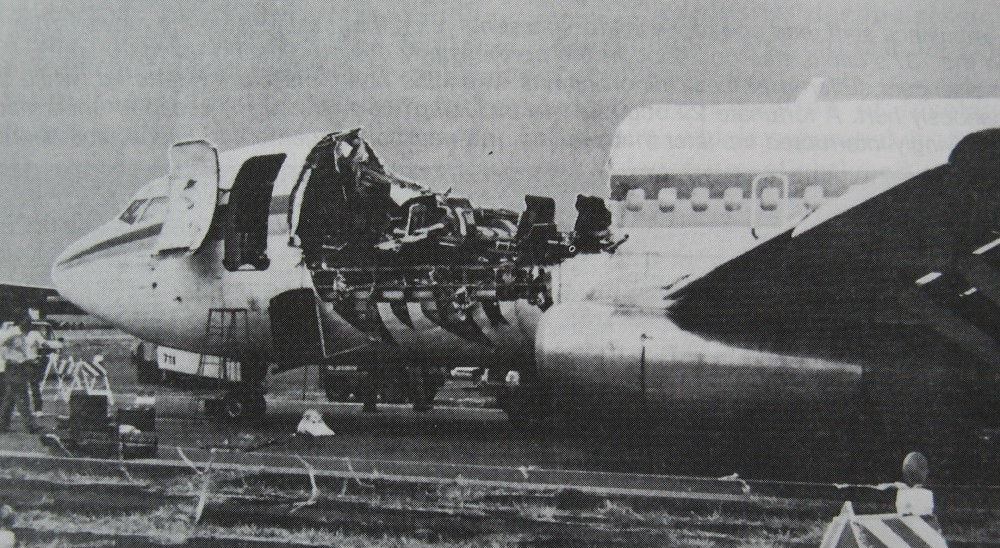
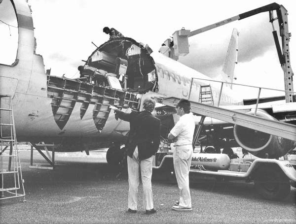

Twenty minutes into a routine inter-island hop, 18 feet of an Aloha Airlines Boeing 737's roof tears away at 24,000 feet. The cabin is suddenly open to the sky at 250 miles an hour. Flight attendant Clarabelle Lansing, standing in the aisle, is swept out instantly. She is never found. Everyone else on board survives, thanks to a captain and first officer who flew a plane with no roof to a runway on Maui.
All times in this case file are local Hawaii Standard Time. Flight 243 was a routine, short inter-island hop, the kind of flight the aircraft had made thousands upon thousands of times before.

On the morning of April 28, 1988, Aloha Airlines Flight 243 prepared for the short hop from Hilo, on Hawaii's Big Island, to Honolulu, a routine inter-island run of well under an hour, the kind of flight that was the backbone of Aloha's whole business. In command was Captain Robert Schornstheimer, 44, with roughly 8,500 flight hours, 6,700 of them on the 737. Beside him sat First Officer Mimi Tompkins, 36, herself an experienced 737 pilot with roughly 8,000 hours. In the cabin, three flight attendants prepared the aircraft for its 89 passengers: chief flight attendant Clarabelle "C.B." Lansing, Michelle Honda and Jane Sato-Tomita.
The aircraft itself, registration N73711, was a Boeing 737-297, the 737-200 variant built for Aloha, nicknamed Queen Liliuokalani, continuing the airline's tradition of naming its planes after Hawaiian royalty. It had been in service since 1969, and while its 35,496 flight hours weren't unusual for a 19-year-old jet, its flight cycles were: 89,680 takeoffs and landings, each one a full pressurization cycle for the fuselage. Boeing had originally designed the 737-200 for a service goal of 75,000 cycles. N73711 had passed that mark by nearly 15,000 cycles, the second-highest cycle count of any 737 in the world at the time. Its sister ship in the Aloha fleet, N73712, held first place, with more than 90,000.
Flight 243 departs Hilo under clear Hawaiian skies, climbing out over the Pacific for the short run to Honolulu.
The aircraft levels off at 24,000 feet. Nothing about the flight has looked unusual. Passengers settle in for what should be a 35-to-40-minute flight.
The entire emergency, from structural failure to touchdown, unfolds in under a quarter of an hour. See The Cockpit and The Landing below.
Flight 243 lands safely on Runway 2 at Kahului, diverted well short of Honolulu, on the aircraft's original flight path, but landed all the same.
Hilo to Honolulu is a short inter-island hop of roughly 216 km (134 miles). The rupture occurred about 23 nautical miles southeast of Kahului, Maui, on the direct route to Honolulu, but close enough to Maui's airport that the crew diverted there instead of continuing.
At 1:46 PM, roughly twenty minutes into an ordinary flight, a loud "whooshing" sound tore through the cabin. Then the roof was simply gone.
An 18-foot section of the upper fuselage (the entire top half of the aircraft's skin and structure, from just behind the cockpit door back to a point over the wing) separated from the airplane in a fraction of a second. The cabin depressurized explosively. First Officer Tompkins was flying the aircraft at that instant; Captain Schornstheimer took the controls immediately and began an emergency descent, diving for denser, breathable air as fast as the aircraft could safely go.
The force of the failure blew the cockpit door clean off its hinges. Behind the flightdeck, the floor structure of the forward cabin dropped more than a meter relative to the rest of the fuselage, the aircraft's nose section had, in effect, come partially apart from its own body, joined only by wiring, control cables and whatever structure remained. The interphone connecting the cockpit to the cabin was destroyed in the same instant. For the next several minutes, the two pilots up front and the two surviving flight attendants in back would each have to manage a catastrophe with no way to talk to one another.

Clarabelle Leiming "C.B." Ho Lansing was 58 years old, and had spent 37 of those years as a flight attendant for Aloha Airlines, one of the airline's very first, hired straight out of high school, decades before most of the passengers on Flight 243 were born.
58 years old · 37 Years With Aloha Airlines
Never found.
As chief flight attendant, Lansing was working the aisle when the fuselage tore open. Passengers who survived the flight would later describe her standing at row five, reaching across to hand a passenger a drink, in the ordinary middle of an ordinary task. In the same instant the roof disappeared, so did she. Witnesses described seeing her lifted up and to the left and gone, swept into the 250-mile-an-hour slipstream at 24,000 feet before anyone could react.
There was nothing anyone could have done. She was the only person standing in the open section of the cabin at the moment it opened to the sky. Search crews combed the ocean below the flight's track in the days afterward. Nothing belonging to her was ever recovered: no wreckage, no personal effects, nothing. She remains the flight's only fatality, and her family has never had the closure of a recovery.
It looks like we've lost a door. We have a hole in this, ah, left side of the aircraft.
— Aloha 243 flight deck, radio call to Maui air traffic control, moments after the ruptureIn 1996, Aloha Airlines dedicated the Clarabelle Lansing Memorial Garden at Honolulu International Airport's Interisland Terminal, a small, permanent tribute at the airport she had worked out of for nearly four decades, honoring a woman who died doing an ordinary job on what should have been an ordinary flight.
For the passengers seated in the first several rows, the world simply opened up: hurricane-force wind, near-freezing air, and a view straight up into open sky at 24,000 feet, with nothing between them and it but a seatbelt.
Every passenger aboard Flight 243 was seated with their seatbelt fastened when the fuselage failed, standard procedure at cruise, and very likely the single reason the death toll wasn't far higher. Investigators later concluded that anyone not restrained in the open section of the cabin would almost certainly have been pulled out with the roof.
Flight attendant Jane Sato-Tomita, working near the front of the cabin, was struck by flying debris and thrown backward into the economy section, her legs tangled in loose wiring, a serious head wound bleeding heavily. She was knocked unconscious in the wreckage and couldn't be freed until the aircraft was on the ground, one of eight people seriously injured that day.
Flight attendant Michelle Honda was thrown to the floor near rows fifteen and sixteen. She got back up, and with the cabin interphone destroyed and no way to reach the flight deck, gripped seat frames and crawled the length of the aisle against the wind, shouting instructions about life vests and brace positions, using her first-aid training on injuries she had no way to properly treat.
An off-duty Aloha flight attendant, Amy Jones-Brown, happened to be riding as a passenger that day. She got up and helped Honda hold the cabin together, calming passengers, organizing the brace position, and later helping lead the evacuation once the aircraft was safely on the ground.
Up front, Schornstheimer and Tompkins were managing a airplane that no longer looked or flew like the one they'd taken off in, with damaged instruments, a dead intercom, and, moments later, a failing engine.
Radio exchanges below are drawn from the cockpit voice recorder and air traffic control tapes, as documented in the public accident record.
The decompression had severed the wiring for the nose landing gear's position indicator, leaving the crew with a cockpit light insisting the gear wasn't down and locked. It was (the light itself was damaged, not the gear), but the crew had no way to know that from inside the cockpit. Air traffic control arranged a visual check from the ground and confirmed the gear was in place, one less unknown in a cockpit already full of them.
During the descent, the left engine failed, almost certainly from debris ingested in the initial structural failure. The crew shut it down and continued the approach on the remaining engine, one more system lost in an aircraft that had already lost its roof, its cabin pressure, its interphone and a working landing-gear indication, all in the space of a few minutes.
Thirteen minutes after the roof tore away, Captain Schornstheimer put a structurally broken airplane down on a runway on Maui, and got it right on the first attempt.
With Kahului Airport closer than continuing on to Honolulu, the crew diverted. Lowering the flaps to their normal landing setting made the damaged airframe shake alarmingly, at 15 degrees, it was bad enough that the crew backed off. Schornstheimer instead flew the final approach with the flaps limited to just 5 degrees and his airspeed held at 170 knots (nearly double a normal 737 landing speed), the minimum speed at which the wounded aircraft still felt controllable.
At 1:58:42 PM, Flight 243 touched down on Runway 2 at Kahului. It was, by any reasonable measure, an extraordinary landing: a 19-year-old airliner missing 18 feet of its roof, flown by a crew who could no longer speak to their own cabin crew, brought in fast and flapless-by-necessity, and set down cleanly enough that the tower simply told them to shut the engines down where they'd stopped. Emergency slides deployed. Evacuation began within moments.

Aloha two forty-three, just shut her down where you are. Everything is fine.
— Maui Tower, to Flight 243, on the runwayNinety-four of the ninety-five people aboard Flight 243 walked, or were carried, off that airplane in Maui.
Of the 95 people aboard (89 passengers and a six-person crew, by the NTSB's own count, though some retellings list 90 passengers and five crew depending on whether an off-duty air traffic controller riding the jumpseat is tallied as a passenger), 65 were injured. Eight were seriously hurt, including flight attendant Jane Sato-Tomita; 57 sustained minor injuries, mostly cuts and bruises from flying debris and the chaos of the decompression. Clarabelle Lansing was the only person killed.
Investigators credited several factors with keeping that number as low as it was: every seated passenger's belt was fastened, the aircraft's structure (battered as it was) held together long enough to land, and the crew, cabin and flight deck alike, kept functioning through a situation none of them had trained for in exactly this form. Michelle Honda and Amy Jones-Brown helped lead a fast, orderly evacuation once the aircraft stopped, getting the injured off first.

The NTSB released its final report (AAR-89-03) on June 14, 1989. The direct cause was a maintenance failure. What it exposed was an entire industry's blind spot around aircraft old enough to fly past their original design assumptions.
The NTSB found the direct cause was Aloha's maintenance program failing to detect significant disbonding and fatigue damage that led to failure of a lap joint in the fuselage skin. N73711's cold-bonded joint construction (used on 737s built before a design change eliminated it) had proven vulnerable to moisture, corrosion and cracking around rivet holes, worsened by years in Hawaii's salt-air coastal environment and inspections that Aloha typically performed at night, when thorough visual checks of the outer skin were hardest to do.
The Board also cited Aloha management's failure to properly supervise its maintenance force, the FAA's failure to adequately evaluate Aloha's inspection and quality-control program, and the FAA's failure to require inspection of all lap joints under an existing Boeing service bulletin. One board member dissented, arguing the sole probable cause should be the undetected fatigue cracking itself, with the airline's and regulator's failures treated as contributing factors rather than primary blame.
Congress responded directly to Flight 243 with the Aging Aircraft Safety Act of 1991, directing the FAA to regulate the continuing airworthiness of older aircraft and to inspect and review airline maintenance records. The FAA's National Aging Aircraft Research Program followed, along with new rules requiring damage-tolerance-based inspections and mandatory records reviews once an airliner passes 14 years in service.
Flight 243 forced the industry to reckon with a danger nobody had fully modeled before: not one crack in one place, but many small cracks accumulating simultaneously across an aging structure, a phenomenon now formally known as Widespread Fatigue Damage. It reshaped how the FAA and Boeing think about exactly how long a pressurized airliner can safely fly, and became a core case study in aviation maintenance training worldwide.
Every fact in this case file was cross-referenced against at least two independent sources, anchored by the official NTSB investigation. All links open in a new tab.
The National Transportation Safety Board's complete final report, issued June 14, 1989, including the probable cause, contributing factors and 21 safety recommendations.
The NTSB's own case summary page, with the investigation ID, key findings and links to the full docket.
The federal legislation passed directly in response to this accident, codified at 49 U.S.C. § 44717.
The FAA's final rule on aging-airplane inspection requirements, part of the regulatory lineage that began with this accident.
An independent aviation-safety reference summary of the accident and its findings.
An independent fact-check confirming the authenticity of the widely circulated photograph of N73711's damage.
Used as a secondary cross-reference for names, figures and timeline; every fact drawn from it was checked against a primary or independent source above.